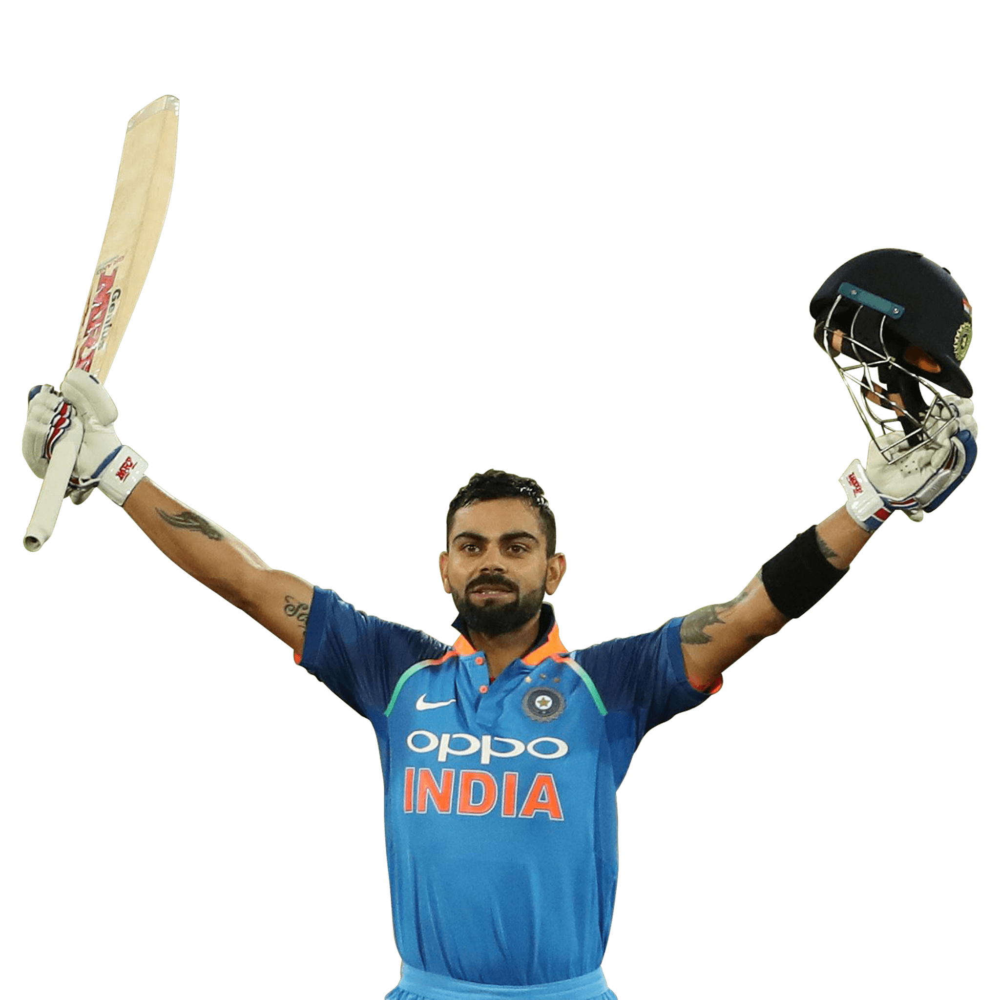

Cricketer
Virat Kohli
Virat Kohli is an Indian cricketer and the current captain of the India national team. A right-handed top-order batsman, Kohli is regarded as one of the best contemporary batsmen in the world. He plays for Royal Challengers Bangalore in the Indian Premier League, and has been the team's captain since 2013.Cricketer
Sourav Ganguly
Sourav Chandidas Ganguly, affectionately known as Dada, is an Indian cricket administrator, commentator and former national cricket team captain who is the 39th and current president of the Board of Control for Cricket in India
Cricketer